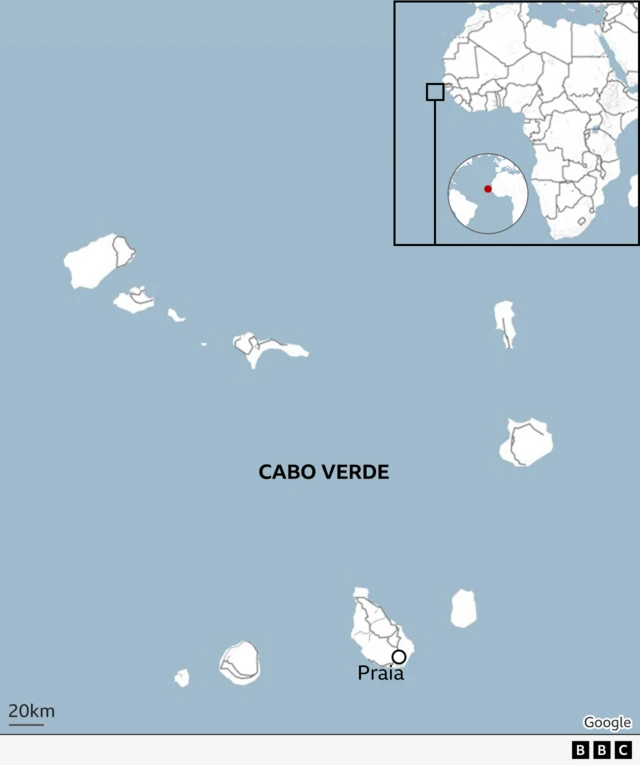
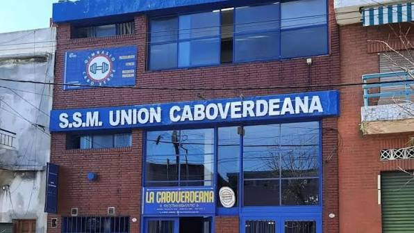

Desde las islas de Cabo Verde hasta los muelles de Dock Sud: seguí el recorrido de una comunidad que cruzó el Atlántico y construyó su casa junto al río.
Una migración voluntaria, empujada por la sequía y la falta de trabajo en el archipiélago bajo dominio colonial portugués.

Por su vínculo histórico con el mar, los primeros caboverdianos llegan a la Argentina como marineros y se asientan en zonas portuarias, donde ya había trabajo embarcado disponible.
La afluencia se hace más regular desde 1923. Muchos viajan con documentación portuguesa —Cabo Verde era colonia de Portugal— lo que durante años invisibilizó su origen en los registros oficiales argentinos.
Un nuevo impulso migratorio coincide con la fundación de las primeras entidades comunitarias: la Asociación Cultural y Deportiva Caboverdeana de Ensenada (1927) y la Sociedad de Socorros Mutuos Unión Caboverdeana de Dock Sud (hacia 1932).
Tras la Segunda Guerra Mundial llega una nueva ola de inmigrantes, en un contexto de expansión de la marina mercante y de la actividad portuaria e industrial argentina.
El 5 de julio, Cabo Verde se independiza de Portugal. Ya existe en Argentina una comunidad de segunda y tercera generación, con instituciones propias e idioma criollo.
Las asociaciones fundadas hace un siglo siguen activas como espacio de música, comida e idioma criollo para las nuevas generaciones de descendientes.
Ningún otro punto del país concentró tanta vida caboverdiana. Explorá el barrio: tocá cada punto del plano.

Sociedad de Socorros Mutuos fundada hacia 1932. Asistía ante la enfermedad, la muerte o la falta de trabajo, y sostenía las redes familiares y culturales de la comunidad. Sigue activa hoy, en el mismo barrio donde nació.
Marineros, maquinistas y tripulantes.
Trabajo embarcado en el Paraná y el Río de la Plata.
Carpinteros, mecánicos y electricistas.
La naviera estatal empleó a numerosos trabajadores caboverdianos.
"Son diez islas, un archipiélago a 500 kilómetros de Dakar. Esa historia dejó una identidad particular." Voz de la comunidad caboverdiana en Argentina